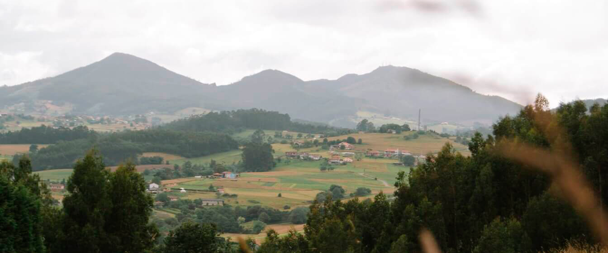
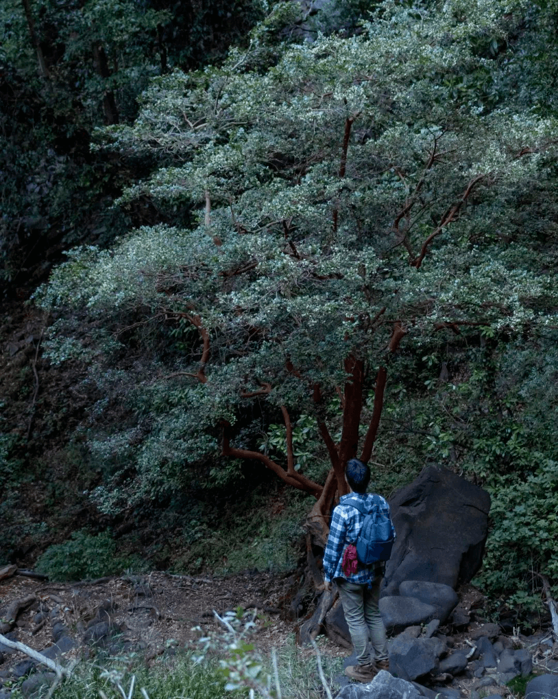
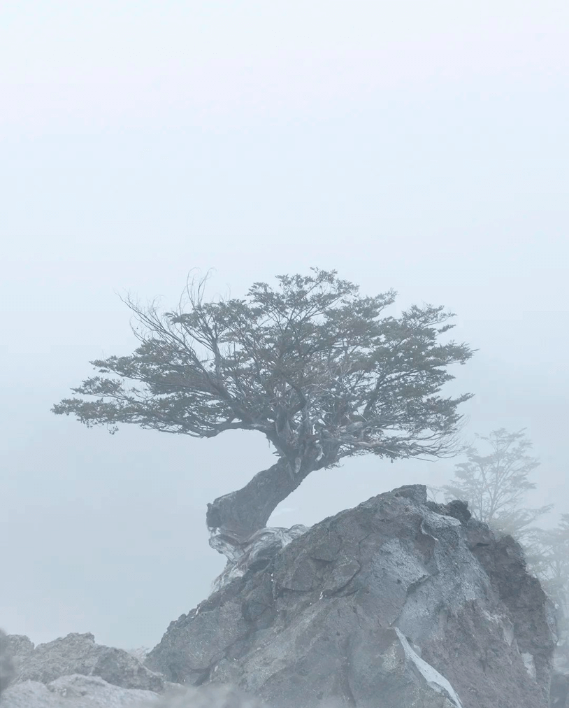

Discover Chile through its flora

Discover the flora across the country
Our community is very active and it maintains and shares information about the plants of Chile. You can check notorious examples from each climatic region here.

Our Community
“Flora of Chile” is a community focused on the diverse and beautiful flora of the diverse and beautiful country of Chile. It is composed of people from all over the country (and even outside of it!), ranging from plant enthusiasts to professional botanists.